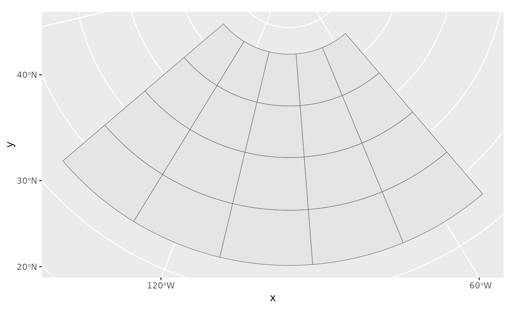
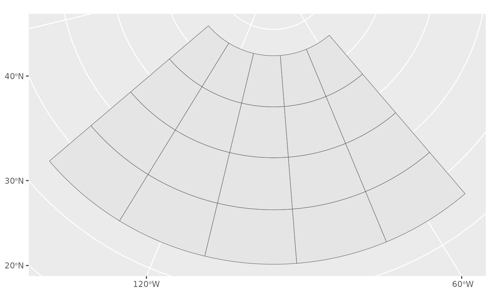

If you need to plot a sf::st_bbox(), use layer_spatial() instead.
While the implementation is slightly differrent, these functions are
intended to behave identically to ggplot2::geom_rect() and
ggplot2::geom_tile().
geom_spatial_rect(
mapping = NULL,
data = NULL,
...,
crs = NULL,
detail = 30,
linejoin = "mitre",
na.rm = FALSE,
show.legend = NA,
inherit.aes = TRUE
)
geom_spatial_tile(
mapping = NULL,
data = NULL,
...,
crs = NULL,
detail = 30,
linejoin = "mitre",
na.rm = FALSE,
show.legend = NA,
inherit.aes = TRUE
)
StatSpatialRect
StatSpatialTileAn object of class StatSpatialRect (inherits from Stat, ggproto, gg) of length 4.
An object of class StatSpatialTile (inherits from StatSpatialRect, Stat, ggproto, gg) of length 4.
An aesthetic mapping created with ggplot2::aes().
A data frame or other object, coerced to a data.frame by ggplot2::fortify().
Passed to the combined stat/geom as parameters or fixed aesthetics.
The crs of the x and y aesthetics, or NULL to use default lon/lat crs (with a message).
Passed to sf::st_segmentize(): the number of line segments
per quadrant of the bounding box. Increase this number for a smoother
projected bounding box.
How corners should be joined
Should missing aesthetic values be removed?
See ggplot2::layer().
library(ggplot2)
tile_df <- expand.grid(
x = seq(-140, -52, by = 20),
y = seq(40, 70, by = 10)
)
ggplot(tile_df, aes(x, y)) +
geom_spatial_tile(crs = 4326) +
coord_sf(crs = 3979)

# the same plot using geom_spatial_rect()
ggplot(
tile_df,
aes(xmin = x - 10, xmax = x + 10, ymin = y - 5, ymax = y + 5)
) +
geom_spatial_rect(crs = 4326) +
coord_sf(crs = 3979)
